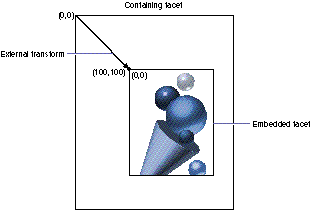
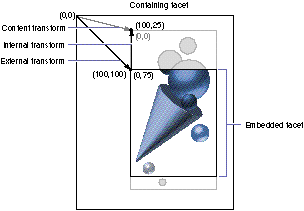
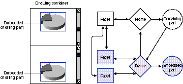

The layout and imaging services offered by OpenDoc, Apple's compound-document
architecture, provide extremely powerful support for document layout. However, with
power comes a certain amount of complexity. The introduction to OpenDoc graphics
given in this article reduces some common graphics operations to simple recipes. By
following these recipes, you'll get a sense of how to use OpenDoc that you can later
build on as you learn about its more sophisticated capabilities.
OpenDoc's layout and graphics model is designed to allow maximum flexibility at
imaging time. You can use it to create very complex displays that include real-time
motion, offscreen rendering and compositing, and more. But at first glance, it can
appear complicated and bewildering. Don't despair: the good news, as you'll learn in
this article, is that you can use it for simple tasks without much trouble.
I touched on some of the basics of the OpenDoc layout model and drawing code in my
article "Building an OpenDoc Part Handler" in develop Issue 19 (which you need not
have read before reading this article). Here I reiterate a little of that and add to it as I
explain the basic terminology and concepts of OpenDoc graphics. Then I present a
series of simple recipes (also provided on this issue's CD) that illustrate the use of
OpenDoc graphics objects. You'll learn how to draw a part, scroll the part, zoom or
rotate the part's content, make an embedded part visible, alter the coordinate system
scaling, and do simple printing under QuickDraw.
OpenDoc objects work together to lay out and draw each piece of content (eachpart) in
a compound document. We'll take a look at the layout model here before focusing on
each of its constituent objects and how the objects relate to one another.
THE LAYOUT MODEL
OpenDoc's layout model includes both a persistent representation and a runtime
representation of a document's state. Persistent information is represented in objects
called frames, while runtime information is captured in objects called facets. The two
sets of objects, working together, produce the structure of the displayed or printed
document.
Frames are arranged in a lattice (speaking in mathematical, not geometric, terms).
Any frame can contain any other, but in practice they almost always fall into a strict
hierarchy, with each frame contained in only one other frame. Frames always contain
a pointer to their containing frame but not directly to their embedded frames. Some
applications -- like Personal Information Managers, which handle lots of
unstructured information -- have more sophisticated data models, however, so
OpenDoc is built to accommodate these applications.
Facets are always arranged in a strict hierarchy, and every facet has pointers to every
contained facet as well as to the containing facet. OpenDoc walks this structure at run
time to perform drawing as well as to handle geometric events such as mouse clicks.
The runtime representation is hooked into the window system by means of a window
object. This window object simply points to the topmost facet in that window's facet
hierarchy.
To understand these objects in greater detail, you need to be familiar with three basic
ideas that form the foundation of OpenDoc's layout and imaging capabilities: canvas,
shape, and transform.
With these definitions in mind, let's take a closer look at frames, facets, and windows.
FRAMES
A containing part and its embedded part share a single frame object, which they use to
communicate persistent layout information. Much of this information is communicated
in the form of shapes, which are ways to describe a geometric area. Specifically,
layout information is communicated by way of the frame shape, the used shape, and the
internal transform associated with a frame.
The frame shape is how the container tells the embedded part how much area it has in
which to lay itself out. The container "owns" this shape, meaning that it's allowed to
set the value. If the embedded part wants a different frame shape, it must ask the
container to change it, and the container might refuse.
The rule in this sort of negotiation is "Don't ask twice!" This means that if an embedded
part asks for a new frame shape and is denied, it shouldn't ask again. It might want to
request a different shape later, but it should never again request exactly the same
shape. The reason, as you might imagine, is to avoid infinite loops in negotiation. Very
long, dull, and useless negotiations between parts may well result if the "Don't ask
twice!" rule isn't followed.
The used shape serves to inform the container exactly what part of the frame shape the
embedded part decided to use, and is "owned" by the embedded part. For example,
imagine that a word processing container passes a rectangular area as the frame shape,
but an embedded pie chart uses only a circular area within the frame shape. The pie
chart can inform the word processor of this by setting the used shape of the frame to
the circular area actually used. It's then the responsibility of the container to fill in
any unused areas of the frame with an appropriate background or drawing. This is
what makes part transparency work.
The internal transform, also "owned" by an embedded part, captures information about
how the embedded part wishes to transform its content when it's displayed. If, for
example, the pie chart of the previous example were too big to fit in the allotted space
in the word processor and wanted to scroll itself to a particular location, it could do so
by setting the internal transform of the frame. We'll look at some examples in the
recipes section to come.
FACETS
A facet is similar to a QuickDraw GX view port, or to a QuickDraw graphics port on
steroids; it's a description of the place where a particular frame of a part becomes
visible. Typically passed in to your part handler by an object at drawing time, a facet
has information about where the part should be drawing the content of the frame right
now. It specifies the canvas where all drawing calls should be made and also includes
clipping and transformation information.
The clipping information appears in the form of the clip shape. This shape specifies
exactly where on a canvas a part handler can draw. It's equivalent to the content region
of a window in a traditional Macintosh application. Actually, there are two versions of
this shape that you can retrieve: the aggregate clip shape, which is the clipping
information relative to your drawing canvas, and the clip shape, which is relative to
the coordinate system of your container. Your container owns the clip shape and sets it
in its own coordinate system. You should always clip any drawing calls you make to the
aggregate clip shape of the facet you're drawing into.
The transformation information comes in the form of a set of transform objects that
are available from the facet, each one specifying a particular coordinate system
related to the frame being displayed. The external transform of a facet specifies where
the facet sits in relation to its container. For example, as illustrated in Figure 1, if
the embedded facet should be offset by (100,100) from the origin of its container, the
external transform would specify an offset of (100,100). Note that in this figure,
only a portion of the content is being displayed in the embedded facet, and the
coordinates (0,0) refer to the content and indicate that the content's upper left corner
presently coincides with the upper left corner of the facet.
The internal transform of a frame is composed with the external transform of its facet
plus all the transforms above it in the facet hierarchy to give the complete
transformation used to draw into the facet, called the content transform. In Figure 2,
which illustrates this process of composition, both transforms are simply offsets. The
external transform specifies an offset of (100,100), so the embedded facet is offset
by (100,100) from the origin of its container, the same as in Figure 1. The internal
transform specifies an offset of (0,-75), so the content is scrolled upward from its
position in Figure 1. A different portion of it now shows in the embedded facet, which
remains the same size as before.

Figure 1. An embedded facet with an external transform of (100,100)

Figure 2. Composing internal and external transforms to obtain a content transfrom
This composition is recursive, so every level of embedding adds a new external and
internal transform to the final transformation. All of the transforms must be
composed together to produce a correct graphical result. When drawing occurs, the
content transform should be applied to any drawing commands. The only exception to
this rule is if you're drawing content that shouldn't scroll as well as content that
should. In this case, use the content transform for scrolling content and use a different
transform, called the frame transform, to draw the rest. The frame transform is
exactly the same as the content transform except that it doesn't include the internal
transform of the innermost frame.
WINDOWS
Windows are the objects that hook OpenDoc facets and frames into the Macintosh
window structure. A window object holds a Macintosh window structure, as well as a
pointer to the topmost facet visible in the window. We call this facet theroot facet
because it's the root of the facet hierarchy in that window. The frame being displayed
through that facet is called the root frame, and the part being displayed in the root
frame is called the root part.
HOW THESE OBJECTS RELATE TO ONE ANOTHER
When a window is visible, it points to a facet at the root of the window. The graphics
port, or root QuickDraw GX view port, of that window is used as the canvas on which
that facet appears.
Every facet displays a particular frame, but a frame can be visible in more than one
facet at the same time. Every frame displays a particular part, but a part can be
displayed in more than one frame, as shown in Figure 3. Here we see a window
displaying two parts: a drawing container that has chosen to split itself into two
independently scrollable sections, and an embedded charting part. To split itself, the
container has set up two facets on the same frame of its embedded charting part, as
indicated in the schematic to the right of the window (in which the arrows represent
pointers). This automatically causes the embedded charting part to display
synchronized views of itself in the two scrollable sections. This is the model that
people who already do splitting in their code are most likely to implement, although
there are more elegant models included in the standard recipes that are part of the
OpenDoc Software Development Kit.

Figure 3. A split window using multiple facets of the same frame
When the information in a part changes, the part needs to update every frame in which
it's displayed. When a part updates the information in a frame, it should redraw into
every facet of the frame. Let's assume, for example, that we have a charting part that
can display a bar chart. When someone changes a data value, the part should make sure
that every frame is redrawn. Since every frame may have multiple facets, the part
handler should iterate through every display frame, iterate through each frame's
visible facets, and draw the content into each. To accomplish this, you can decide to
invalidate all of the affected frames and let OpenDoc make sure everything is redrawn
correctly. However, if performance or timing constraints make this impractical, or if
flicker is an issue, your part handler can draw directly into each facet or each affected
frame, using a doubly nested loop.
Now let's look at a series of examples of how to use these objects to perform basic
graphics operations. Each of the following recipes is, by nature, just a skeleton. Every
part handler has different drawing code, so we'll concentrate on outlining general
recipes and wave our hands over the specific drawing commands.
The examples are all based on Color QuickDraw, on the assumption that more readers
will be familiar with these calls than with the QuickDraw GX equivalents. I'm counting
on you QuickDraw GX aficionados to perform the necessary mapping between
QuickDraw and QuickDraw GX as you read. The QuickDraw GX equivalent calls will
work equally well to clip, set up drawing contexts, and perform geometric operations.
Of course, you'll find QuickDraw GX helps tremendously in implementing scaling,
rotation, and other transformations. Even though these examples are in Color
QuickDraw, I urge you to use QuickDraw GX as your basic imaging model if you can.
The example code you'll see here is a simplified version of code written by Steve Smith
and Eric House. The good ideas are theirs; the mistakes are probably mine. This is not
intended to be working code, since error handling and some other pieces have been left
out for the sake of simplicity.
DRAWING A PART
Our first recipe tells how to draw a part. There are only a few simple steps here, for
the most basic case. Take a look at Listing 1 as we discuss the recipe. To keep things as
simple as possible, we'll ignore scrolling and printing for the moment. The basic steps
are as follows:
Listing 1. MyPart::Draw, simplest case
void MyPart::Draw(Environment* ev, ODFacet* facet,
ODShape* invalShape)
{
// Set up graphics port.
GrafPtr port = facet->GetCanvas(ev)->GetQDPort(ev);
SetPort(port);
// Set up graphics port offset for drawing content.
ODTransform* localToGlobal =
facet->GetContentTransform(ev, kODNULL);
ODPoint offset(0,0);
offset = localToGlobal->TransformPoint(ev, &offset);
SetOrigin(-offset.IntX(), -offset.IntY());
localToGlobal->Release(ev);
// Set up graphics port clip; save old clip.
RgnHandle saveClip = NewRgn();
GetClip(saveClip);
ODShape* clipShape = facet->GetAggregateClipShape(ev, kODNULL);
RgnHandle clip = clipShape->GetQDRegion(ev);
SetClip(clip);
clipShape->Release(ev);
// And draw (insert your drawing code here).
// Remember to respect the scaling and rotation information
// in your content transform, if possible. If you can't do this,
// it's graceful to at least try to draw as best you can, rather
// than simply signaling an error.
...
// Clean up.
SetClip(saveClip);
DisposeRgn(saveClip);
SetOrigin(0,0);
}
As you may have noticed, this is only slightly more complex than using the existing
window system. Luckily, all of the added complexity comes only in the setup code, not
in the actual drawing calls. Once the drawing environment has been set up, you're free
to make the same drawing calls you always have.
Incidentally, there's an easy way to get all of the correct setup code done for you: a
public utility called FocusLib, available as part of the OpenDoc Software Development
Kit, reduces the setup code you see in this and the following examples to a single call. I
didn't use it here because I wanted you to see exactly what needs to be done, just in case
FocusLib doesn't meet your precise requirements and you must do it yourself. For
instance, FocusLib is in C++, so not everyone can use it.
SCROLLING THE PART
Creating a scrolling part is only a bit more complex than making one that doesn't
scroll. The best way to scroll in OpenDoc is to modify the internal transform of your
part's display frame. This has the effect of automatically scrolling any embedded parts
that are visible right now, without any extra work on your part. Check out Listing 2,
which shows the changes in the draw method for this slightly more complex case. The
basic steps are as follows:
Listing 2. MyPart::Draw, with scrolling
void MyPart::Draw(Environment* ev, ODFacet* facet,
ODShape* invalShape)
{
Point spclOffset = {0,0};
Point contentOffset = {0,0};
// Set up graphics port.
GrafPtr port = facet->GetCanvas(ev)->GetQDPort(ev);
SetPort(port);
// Set up graphics port offsets for controls.
ODTransform* localToGlobal =
facet->GetFrameTransform(ev, kODNULL);
ODPoint tempOffset1(0,0);
tempOffset1 = localToGlobal->TransformPoint(ev, &tempOffset1);
SetOrigin(-tempOffset1.IntX(), -tempOffset1.IntY());
// Set up special offset for later efficient reset of clipping
// region.
spclOffset = localToGlobal->GetQDOffset(ev);
ODTransform* contentTransform = facet->GetContentTransform(ev,
kODNULL);
contentOffset = contentTransform->GetQDOffset(ev);
spclOffset.v -= contentOffset.v; spclOffset.h -= contentOffset.h;
localToGlobal->Release(ev);
// Set up graphics port clipping.
RgnHandle saveClip = NewRgn();
GetClip(saveClip);
ODShape* clipShape = facet->GetAggregateClipShape(ev, kODNULL);
RgnHandle clip = clipShape->GetQDRegion(ev);
SetClip(clip);
// Draw your controls (such as scroll bars) here, using the
// standard Toolbox calls. Remember to respect the scaling
// and rotation information in your transform, or at least
// try to draw as best you can, rather than simply signaling
// an error.
...
// Set up graphics port for drawing content.
ODPoint tempOffset2(0,0);
tempOffset2 = contentTransform->TransformPoint(ev, &tempOffset2);
SetOrigin(-tempOffset2.IntX(), -tempOffset2.IntY());
// Use the special offset we set up earlier to keep the clip in
// the right place relative to the origin. Remember to remove the
// scroll bar area from the clipping region.
OffsetRgn(clip, spclOffset.h, spclOffset.v);
SetClip(clip);
// And draw (insert your drawing code here).
// Remember to respect the scaling and rotation information
// in your content transform if possible, as mentioned above.
...
// Clean up.
SetClip(saveClip);
DisposeRgn(saveClip);
contentTransform->Release(ev);
clipShape->Release(ev);
SetOrigin(0, 0);
}
Listing 3 shows how you would handle the actual scrolling. The recipe here is also
quite simple. By altering the internal transform of the frame being displayed, you
change not only the display of the content but also the position of all embedded facets.
For this recipe to work, the previous recipe must have been implemented. The steps
are as follows:
You can no doubt imagine much more complex scrolling behavior, with significantly
better optimization than you see in these examples.
Listing 3. Handling the scrolling
ODBoolean MyPart::HandleMouseDownScrollBar(Environment* ev,
Point mouse, ODFrame* frame)
{
ODSShort partcode = TrackControl(fScrollBar, mouse, kODNULL);
Point transPt;
ODSShort setting = GetControlValue(fScrollBar);
if (partcode) {
// Deal with the scroll bar and choose the scroll distance.
switch (partcode) {
case inUpButton:
setting--;
break;
case inDownButton:
setting++;
break;
case inPageUp:
if ((setting - kPBPageSize) < 0) setting = 0;
else setting -= kPBPageSize;
break;
case inPageDown:
ODSShort max = GetControlMaximum(fScrollBar);
if ((setting + kPBPageSize) > max) setting = max;
else setting += kPBPageSize;
break;
default:
break;
}
SetControlValue(fScrollBar, setting);
SetPt(&transPt, 0, (0-setting)); // This is a vertical
// scroll bar.
// Set up the transform.
ODTransform* newIntTrans = frame->CreateTransform(ev);
newIntTrans->SetQDOffset(ev, &transPt);
frame->ChangeInternalTransform(ev, newIntTrans, kODNULL);
newIntTrans->Release(ev);
// Here's some simplified code for invalidating any embedded
// facets that have been moved. This is a "saturation bombing"
// approach rather than the tuned code of a real application,
// but it gets the basic idea across. Typically, we do a
// ScrollRect followed by invalidation of the revealed area.
// Here we simply invalidate everything.
frame->Invalidate(ev, kODNULL, kODNULL);
return kODTrue;
}
return kODFalse;
}
There's a bit of human interface to mention at this juncture. You shouldn't grab the
selection focus simply because scrolling is occurring. At first blush, it might make
sense to imagine that a part should become active when scrolling. There's no particular
reason to do this, though. Scroll bars should become active when the window is
frontmost, but a part should become active (that is, grab the selection focus) only
when a selection is made within it.
ZOOMING OR ROTATING THE PART'S CONTENT
The process of zooming or rotating your content is closely related to the scrolling
recipe we just examined. Again, the internal transform can be used to apply to not only
your own content but that of embedded parts as well. Listing 4 is a simple example of a
4x scaling operation that zooms in by a factor of 4. As before, it assumes correct
behavior from the drawing code, as illustrated in Listing 1.
The recipe for both zooming and rotating is fairly simple:
Listing 4. A 4x scaling operation
void MyPart::ZoomContents4X(Environment* ev, ODFrame* frame)
{
ODPoint frameScale(4, 4);
// Apply the zoom transformation.
ODTransform* intTrans = frame->GetInternalTransform(ev, kODNULL);
intTrans->ScaleBy(ev, &frameScale);
intTrans->Release(ev);
// Invalidate the frame for redrawing.
frame->Invalidate(ev, kODNULL, kODNULL);
}
MAKING AN EMBEDDED PART VISIBLE
When you're writing a handler for parts that can contain other parts, there comes a
time when you have a pointer to a part that hasn't yet been made visible. We won't go
into exactly how such a part is obtained from the Clipboard or the drag and drop object.
Suffice it to say that if you do things correctly, you'll end up with a pointer to a
storage unit that has part data inside it.
To embed this part, you must create a frame and a facet for it. Once you've done that,
you probably want to remember the frame and the facet for further reference. Take a
look at Listing 5 for an example. The recipe for making a part visible and embedding it
inside your part is as follows:
Listing 5. Making an embedded part visible
void MyPart::EmbedPartFromSU(Environment* ev, ODStorageUnit* newSU,
ODFacet* myFacet)
{
ODPart* newPart = newSU->GetDraft(ev)->GetPart(ev, newPartID);
ODRect rect(0, 0, kPBDefaultFrameSize, kPBDefaultFrameSize);
ODShape* newFrameShape = myFacet->CreateShape(ev);
newFrameShape->SetRectangle(ev, &rect);
ODFrame* newFrame = newSU->GetDraft(ev)->CreateFrame(ev,
kODNULL, // Use the default frame type.
myFacet->GetFrame(ev), // Containing frame is my frame.
newFrameShape, // Use the frame shape we set up.
(ODCanvas*)kODNULL, // No special canvas.
newPart, // The part in the frame.
fSession->Tokenize(ev, kODViewAsFrame),
// View as a frame.
kODNullTypeToken, // Undefined presentation.
kODFalse, // Not a root frame.
kODFalse); // Not overlaid.
newSU->Release(ev);
// Set up a clip shape, same as frame shape.
ODShape* frameShape = newFrame->GetFrameShape(ev, kODNULL);
ODShape* newClipShape = frameShape->Copy(ev);
Point offset = {100,100};
ODTransform* newExternalXForm = myFacet->CreateTransform(ev);
newExternalXForm->SetQDOffset(ev, &offset);
ODFacet* newFacet = myFacet->CreateEmbeddedFacet(ev,
newFrame, // Of this frame.
newClipShape, // With this clip shape.
newExternalXForm, // At this location/scale/rotation.
kODNULL, // No special canvas.
kODNULL, // No special bias canvas.
kODNULL, // No sibling specified.
kODFrameInFront); // Put this facet at front.
// At this point, we probably want to remember the new frame
// and facet in some data structure.
this->rememberFrame(newFrame, newFacet);
// Invalidate facet so that it displays. We need to invalidate our
// entire frame because the new facet may interact with other
// content in various ways. This is the simplest correct method,
// although optimizations may be reasonable in production code.
myFacet->GetFrame(ev)->Invalidate(ev, kODNULL, kODNULL);
// Clean up.
newPart->Release(ev);
newFrame->Release(ev);
newFrameShape->Release(ev);
newExternalXForm->Release(ev);
newClipShape->Release(ev);
frameShape->Release(ev);
}
ALTERING THE COORDINATE SYSTEM SCALING
A common misconception about OpenDoc is that its base coordinate system is
insufficient to handle truly large documents. The coordinate system is in fixed-point
16.16 numbers, where the number 72.0 represents 1 inch. If we take this literally,
it means that coordinates in this space can only represent an area of about 455 inches
on a side and that we can place elements in that area to a precision of about
1/2,000,000 of an inch.
Clearly, we could trade off a little bit of that precision for a larger working area. This
would involve scaling any incoming points or shapes. Actually, by doing this, we can
easily lay out an area about 2,000 typical pages on a side at a precision of about
1/4,000 of an inch, including some bits for round-off error in the scaling
multiplications. You can ask why we chose 72.0 as the basic scale of our coordinate
system, but we won't tell you.
The key here is to work internally in coordinates that suit you, without disturbing the
coordinate scaling of your embedded parts. The best way to do this is to apply an
internal scaling transform for your own graphics and then apply external scaling
transforms to all of your embedded parts.
For example, to get a larger area that still has adequate placement, you might decide to
work in a coordinate system where 1.0 = 1 inch. This would still let you place
elements with an accuracy of about 1/32,767 of an inch but would let you work in a
layout space that was 32,767 inches on a side. This is about 3,000 pages high, a
pretty good size. You'll probably get some rounding error during multiplication,
though, so it's best not to count on exact placement within more than about 1/1,000 of
an inch at this scaling. Listing 6 is an example of how to do this particular
transformative trick.
Listing 6. Altering the coordinate system scaling
{
ODPoint frameScale(72,72);
// Set up the transform.
ODTransform* existingTransform = frame->GetInternalTransform(ev,
kODNULL);
ODTransform* newIntTrans = existingTransform->Copy(ev);
existingTransform->Release(ev);
newIntTrans->ScaleDownBy(ev, &frameScale);
// Apply the zoom transformation within myself.
frame->ChangeInternalTransform(ev, newIntTrans, kODNULL);
newIntTrans->Release(ev);
// Now, be a good citizen and iterate over every facet of myself.
ODFrameFacetIterator* facets = frame->CreateFacetIterator(ev);
for (ODFacet* facet = facets->First(ev);
facets->IsNotComplete(ev); facet = facets->Next(ev)) {
// For each facet of myself, find every embedded facet.
ODFacetIterator* embeddedFacets = facet->CreateFacetIterator
(ev, kODTopDown, kODFrontToBack);
for (ODFacet* embeddedFacet = embeddedFacets->First(ev);
embeddedFacets->IsNotComplete(ev);
embeddedFacet = embeddedFacets->Next(ev)) {
// Alter the transform of each embedded facet.
existingTransform = embeddedFacet->GetExternalTransform(ev,
kODNULL);
ODTransform* newExtTrans = existingTransform->Copy(ev);
// Notice that we scale in the opposite direction in
// each embedded frame.
newExtTrans->ScaleBy(ev, &frameScale);
embeddedFacet->ChangeGeometry(ev, kODNULL, newExtTrans,
kODNULL);
newExtTrans->Release(ev);
existingTransform->Release(ev);
}
ODDeleteObject(embeddedFacets);
}
ODDeleteObject(facets); }
SIMPLE PRINTING UNDER QUICKDRAW
The last and most complicated recipe is getting a part to print under QuickDraw. As you
know, any printing activity on the Macintosh is fairly complex. OpenDoc doesn't add
much complexity to the process, as you'll see from the example.
First, every part needs to understand how to draw correctly to a PostScript(TM)
printer. There's a trick to this because of how the LaserWriter drivers operate. They
don't clip to regions if asked to do so; instead, they merely clip to the bounding
rectangle of the suggested region. So to set a clipping region when printing to a
PostScript device, you'll need to create a clipping polygon in PostScript. This is true
even for parts that are always rectangular, because they might be clipped irregularly.
You can detect the presence of a PostScript device by examining the printing job at
draw time. The printing job is always available in the canvas when you're being asked
to draw to a PostScript device. There are a number of ways to check this, but no
standard method that Apple supports; typically, you check the device number and make
a choice based on a table kept in your code. If you are in fact drawing to a PostScript
device, call the routines shown in Listing 7, rather than SetClip, to set clipping for
your part. You don't have to do this when you're printing to a non-PostScript printer,
because simple region clipping works just fine there.
Listing 7. Setting clipping when printing to a PostScript device
#define kPostScriptBegin 190 // Picture comments for PostScript
#define kPostScriptEnd 191 // printing.
#define kPostScriptHandle 192
void ODBeginPostScriptClip(Environment* ev, ODShape *shape)
{
ODPolygon poly = shape->CopyPolygon(ev);
Handle clipHandle = NewEmptyHandle();
AppendString("\pgrestore", clipHandle);
// Utility routine to append
AppendString("\pnewpath", clipHandle); // string to a handle.
char buf[128];
ODContour *cont = poly.FirstContour();
for (long n=poly.GetNContours(); n>0; n--) {
const ODPoint *v = cont->vertex;
long m = cont->nVertices;
if (m > 2) {
sprintf(buf, "%.2f %.2f moveto", v->x/65536.0,
v->y/65536.0);
AppendBuf(buf, strlen(buf), clipHandle);
// Utility routine to append string buffer to a handle.
while (--m > 0) {
v++;
sprintf( buf, "%.2f %.2f lineto", v->x/65536.0,
v->y/65536.0);
AppendBuf(buf, strlen(buf), clipHandle);
}
}
AppendString("\pclosepath clip", clipHandle);
cont = cont->NextContour();
}
// Set pic comment; then delete clipHandle.
AppendString("\pgsave", clipHandle);
PicComment(kPostScriptBegin, 0, kODNULL);
PicComment(kPostScriptHandle, GetHandleSize(clipHandle),
clipHandle);
PicComment(kPostScriptEnd, 0, kODNULL);
DisposeHandle(clipHandle);
}
void ODEndPostScriptClip( )
{
Handle clipHandle = NewEmptyHandle();
AppendString("\pgrestore", clipHandle);
PicComment(kPostScriptBegin, 0, kODNULL);
PicComment(kPostScriptHandle, GetHandleSize(clipHandle),
clipHandle);
PicComment(kPostScriptEnd, 0, kODNULL);
DisposeHandle(clipHandle);
}
You may well want to consider using ColorSync during printing. There's nothing
special to worry about in OpenDoc; just go ahead and take advantage of it as desired.
Other parts may be using ColorSync independently when they draw as well, and all of
these may use independent color-matching methods.
Every part should understand how to perform printing of the window if it's the root
part of that window. You'll invoke this recipe when the Print command is chosen from
the Document menu. The recipe presented here works for rather simple parts but
probably not for complex parts like full word processors or page layout programs that
have hundreds of pages to lay out and print. In addition, to simplify the look of the code,
a special helper object handles most of the direct calls to the printer driver. Finally,
this part doesn't alter its layout for printing, as some parts might want to do.
Given these caveats, though, the basic recipe is as follows:
Listings 8 through 10 contain some code to help you implement this recipe. Rather
than attempt to show you an entire printing loop here, I'll show three routines that
correspond to the key differences in the OpenDoc model of printing.
Listing 8 shows how to perform steps 2 and 3 of the recipe above. This routine expects
to be passed a printing port, the page rectangle for the first page of the print job, and
the root frame of the window being printed. The routine takes this information and
creates a facet on the root frame. It then builds a canvas on the print job's printing
port and sets the facet to draw on that canvas. We do this so that we can use OpenDoc's
drawing code to image the page. Once we have a facet set up, we need only force the facet
to update to get all of the parts to image on the page.
Listing 8. Setup for basic printing
ODFacet* MyPart::BeginPrinting(Environment *ev, ODFrame* rootFrame,
TPrPort* thePrPort, ODRect *pageRect)
{
// Set up identity transform, get page rect, set up to clip to it.
ODTransform* xtransform = rootFrame->CreateTransform(ev);
ODShape* clipshape = rootFrame->CreateShape(ev);
clipshape->SetRectangle(ev, pageRect);
// Create a facet with the specific geometry we just set up.
ODFacet* prFacet = fSession->GetWindowState(ev)->
CreateFacet(ev, rootFrame, clipshape, xtransform, kODNULL,
kODNULL);
xtransform->Release(ev);
clipshape->Release(ev);
// Set up a canvas based on the print job's port.
ODCanvas* prCanvas = prFacet->CreateCanvas(ev, kODQuickDraw,
(GrafPtr)thePrPort, kODFalse, kODFalse);
prCanvas->SetPlatformPrintJob(ev, kODQuickDraw,
(GrafPtr)thePrPort);
// Make it the canvas of the facet we created.
prFacet->SetCanvas(ev, prCanvas);
rootFrame->FacetAdded(ev, prFacet);
// Return the facet to the main print routine.
return prFacet;
}
Note that this particular setup routine doesn't handle a very important case:
QuickDraw GX-based part handlers. To set these up correctly, we would replace steps
1 and 2 of the recipe above with the following:
If QuickDraw GX printing isn't present, set up a normal Color
QuickDraw print job.
If QuickDraw GX printing is present, set up a QuickDraw GX print job.
Also, set up a Color QuickDraw graphics port, for use with the
QuickDraw-to-QuickDraw GX translator.
Install the QuickDraw-to-QuickDraw GX translator in your Color
QuickDraw graphics port.
Install the Color QuickDraw graphics port as the QuickDraw platform
canvas in the canvas object.
Install a view port that embedded part handlers can use as the
QuickDraw GX platform canvas in the canvas object.
By setting up translators, a QuickDraw GX-based part handler can still work with
embedded QuickDraw-based parts. This is a fairly complex (though straightforward)
bit of code, one that we'll avoid for the purposes of this article. There's a complete
recipe in the OpenDoc Software Development Kit for handling this case.
The next step is to loop through the pages, drawing each one. We'll assume that you can
handle the details of creating a standard print loop yourself. Listing 9 shows the
correct code to call in the middle of the page loop. This corresponds to steps 4a and 4b
of our printing recipe. This routine gets the basic page geometry, resets the offsets and
clipping for the page, and then forces the parts visible on the page to draw by calling
an update on the root facet we've created elsewhere.
Listing 9. Printing a page
void MyPart::PrintPage(Environment *ev, ODFacet* prFacet,
ODUShort page, ODRect *pageRect)
{
// Get some basic printing geometry.
ODRect bbox;
Rect frect, qdPRect;
ODShape* frameShape = prFacet->GetFrame(ev)->
GetFrameShape(ev, kODNULL);
frameShape->GetBoundingBox(ev, &bbox);
bbox.AsQDRect(frect);
frameShape->Release(ev);
Point pt = {0,0};
ODUShort locator = page-1;
// Pick an appropriate offset, based on page number.
pageRect->AsQDRect(qdPRect);
while (locator) {
pt.v += (qdPRect.bottom+1);
locator--;
if (PtInRect(pt, &frect))
continue;
else {
pt.v = 0; pt.h += (qdPRect.right+1);
}
}
// Make a transform for that offset.
ODTransform* xtransform = prFacet->CreateTransform(ev);
xtransform->SetQDOffset(ev, &pt);
// Create a clip shape for the page, based on the transform.
ODShape* clipshape = prFacet->CreateShape(ev);
clipshape->SetRectangle(ev, pageRect);
ODShape* invalshape = clipshape->Copy(ev);
clipshape->Transform(ev, xtransform);
xtransform->Invert(ev);
// Change the geometry of the printing facet.
prFacet->ChangeGeometry(ev, clipshape, xtransform, kODNULL);
// Draw everything on the page. OpenDoc will call the Draw method
// on every part visible on the page.
prFacet->Update(ev, invalshape, kODNULL);
// Clean up.
clipshape->Release(ev);
invalshape->Release(ev);
xtransform->Release(ev);
}
Once the print loop is complete, we'll want to clean up. Listing 10 shows the routine
that corresponds to step 5 of our printing recipe. It simply tosses away the facet and
the canvas we created in Listing 8.
Listing 10. Cleanup after printing
void MyPart::EndPrinting(Environment *ev, ODFacet* prFacet)
{
// Find the printing canvas and facet; delete them.
ODCanvas* prCanvas = prFacet->GetCanvas(ev);
prFacet->GetFrame(ev)->FacetRemoved(ev, prFacet);
delete prCanvas;
delete prFacet;
}
If you're performing more advanced printing, you may want to allow embedded parts to
lay themselves out differently based on whether they're printing to a static or a
dynamic canvas. In this case, you'll need to create new frames and perform layout
negotiation. You should create nonpersistent frames, or they'll needlessly be written
out to the document the next time the user saves. You'll probably want to do this:
Create a new nonpersistent frame for your part (the "master frame").
Create new nonpersistent frames for each embedded part and allow shape negotiation to
occur on these new embedded frames.
Use the previous recipe to print the master frame.
For simple cases, as you can see, the OpenDoc layout and graphics model isn't much
more complex than what you probably already do. Even better, most of your code will
work fine in the new model with just some additional setup and cleanup code. This is no
accident, as OpenDoc has been designed from the start to allow you to reuse large parts
of your code. So go ahead and show us some cool new parts with great graphics.
KURT PIERSOL is a system architect at Apple and has been involved with the Apple
events project, AppleScript, and OpenDoc. You can recognize him by his eccentric
fashion sense and his tendency to use funny accents during heated engineering
discussions.
Early releases of OpenDoc will be made available through a number of different
sources, including develop.
Thanks to our technical reviewers Jens Alfke, Steve Smith, and Joshua Susser.